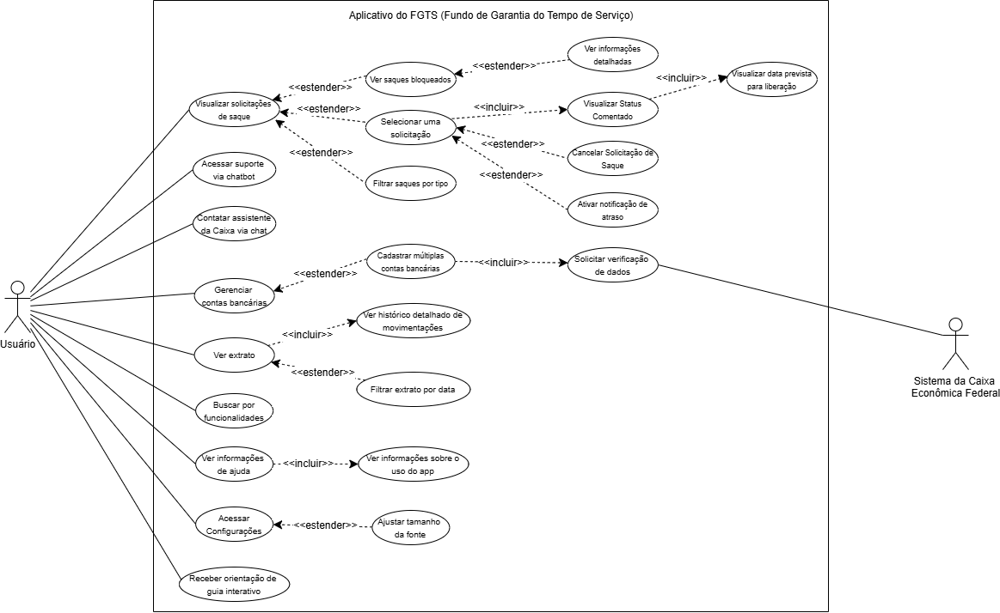

Diagrama de Caso de Uso
Introdução
O Diagrama de Casos de Uso representa, de forma clara e objetiva, as funcionalidades essenciais do aplicativo FTGS, a partir da interação entre o sistema e seus usuários.
Utilizando a notação UML, este diagrama comportamental identifica os Atores (usuários ou sistemas externos) e os Casos de Uso (ações que geram valor para o usuário), mostrando como o aplicativo deve se comportar para atender às suas necessidades.
No caso do FTGS, o foco está em mapear quem utiliza o sistema e quais ações podem realizar, como acessar funcionalidades, enviar informações ou visualizar conteúdos.
Quando necessário, cada caso de uso pode ser detalhado em uma Especificação de Casos de Uso, para descrever o fluxo completo da funcionalidade.
Metodologia
Todo o processo de elaboração do Diagrama de Casos de Uso do aplicativo FTGS está sendo desenvolvido pelos próprios membros da equipe, com base nos conceitos discutidos em sala de aula e nos materiais disponibilizados pelo professor.
A ferramenta utilizada para construção do diagrama foi o diagrams.net (2), escolhida por sua facilidade de uso e clareza na apresentação visual. Além disso, o modelo segue as diretrizes da Notação UML (1) , conforme exemplificado nos slides do professor.
O diagrama passou por uma validação inicial junto ao cliente (a definir), garantindo que as funcionalidades levantadas estejam alinhadas com as necessidades esperadas.
Abaixo, segue a tabela com os membros participantes do processo de construção do trabalho:
Tabela 1: Participantes
| Nome | Data | Hora |
|---|---|---|
| Danielle Soares | 17/05/2025 | 22:50 |
| Eduardo de Pina | 18/05/2025 | 10:57 |
| Enzo Emir | 17/05/2025 | 02:00 |
| Leticia Arisa | 17/05/2025 | 14:45 |
| Marcelo Makoto | 17/05/2025 | 09:37 |
| Maria Eduarda | 18/05/2025 | 17:00 |
| Victor Pontual | 17/05/2025 | 17:00 |
Fonte: Leticia Arisa
Diagramas de Casos de Uso
Figura 1: Diagrama de Casos de uso do App FGTS - Requisitos Implementados
Fonte: Danielle Soares e Enzo Emir
Figura 1: Diagrama de Casos de uso do App FGTS - Requisitos Não Implementados

Fonte: Danielle Soares e Enzo Emir
Legenda dos Diagramas de Caso de Uso
| Nome | Função | Elemento |
|---|---|---|
| Ator | Representa um usuário externo (pessoas, outros sistemas, etc) que interage com o sistema em análise para atingir um objetivo específico. | |
| Elipse | Utilizada para representar os casos de uso, o qual descreve uma funcionalidade ou ação que o sistema realiza em resposta às interações dos atores. | |
| Retângulo | Delimita as fronteiras do sistema que está sendo modelado, englobando todos os casos de uso. Tudo que está dentro deste retângulo pertence ao sistema. | |
| Flecha | Indica a relações entre um ator e um caso de uso, mostrando que o ator se comunica com o caso de uso para realizar uma ação ou obter um serviço do sistema. |
Descrição
No contexto do aplicativo FGTS, o Diagrama de Casos de Uso é uma ferramenta visual que mostra como os usuários interagem com o sistema e quais funcionalidades o aplicativo deve oferecer.
Esse tipo de diagrama é importante porque permite entender, de forma clara e rápida, o que o usuário pode fazer no aplicativo, facilitando o planejamento, o desenvolvimento e a comunicação entre a equipe e o cliente.
Atores
Atores são os usuários ou sistemas que interagem com o aplicativo FGTS. Um ator pode ser uma pessoa, uma organização ou até mesmo um sistema externo que se conecta ao aplicativo para realizar ou receber alguma ação.
No caso do aplicativo FGTS, os atores representam os elementos externos que produzem ou consomem dados do sistema. São eles que iniciam os casos de uso, como consultar saldo, solicitar saque ou atualizar informações. Segue um exemplo:
Usuário
Ator principal que representa o trabalhador com conta vinculada ao FGTS. Ele:
- Consulta o saldo disponível em sua conta do FGTS.
- Visualiza o extrato detalhado das movimentações.
- Solicita saques, quando permitido pelas regras do fundo.
- Atualiza informações cadastrais como endereço e dados bancários.
Sistema da Caixa Econômica Federal
Ator secundário representando um sistema externo. Ele:
- Valida os dados de acesso e autenticação do usuário.
- Atualiza em tempo real as informações de saldo e extrato.
- Autoriza ou recusa solicitações de saque, conforme regras do FGTS.
- Envia informações ao aplicativo com base em eventos relevantes (ex: novo depósito, liberação de saque).
Especificação dos Casos de Uso
Esta seção apresenta a especificação dos principais casos de uso relacionados ao aplicativo FGTS. O objetivo é descrever, de forma detalhada, como cada funcionalidade deve se comportar, considerando as interações entre os atores (usuário, sistema da Caixa e administrador) e o sistema.
As especificações foram elaboradas com base nos requisitos funcionais ainda não implementados, identificados durante a análise do sistema. Cada integrante da equipe foi responsável por desenvolver as descrições de acordo com os critérios discutidos em grupo e orientados pelo material da disciplina.
As informações estão organizadas em campos como Nome, Descrição, Atores, Pré-Condições, Pós-Condições, além dos Fluxos Principal, Alternativo e de Exceção, seguindo a estrutura padrão da UML (1) para casos de uso.
Caso de Uso 1 (EN02)
Tabela 2: Visualizar Status Comentado do Saque
| RF39 | Descrição |
|---|---|
| Nome do Caso de Uso | Visualizar Status Comentado do Saque |
| Rastreabilidade | EN02 |
| Ator Principal | Usuário |
| Atores Secundários | Sistema do FGTS, Servidor da Caixa |
| Objetivo | Permitir que o usuário acompanhe o andamento do processo de saque com status detalhado e comentários explicativos. |
| Pré-condições | - O usuário deve estar autenticado no aplicativo. - Deve existir ao menos um pedido de saque realizado. |
| Fluxo Principal de Eventos | 1. O usuário acessa o aplicativo do FGTS. 2. Navega até a seção "Saque". 3. Seleciona o pedido de saque ativo. 4. O sistema exibe o status atual do saque em formato de linha do tempo. 5. Um comentário explicativo é exibido para esclarecer o status atual. 6. O sistema atualiza automaticamente o status e o comentário conforme o processo evolui. |
| Fluxos Alternativos | - Usuário seleciona outro pedido de saque para visualização. - O sistema exibe status anterior se o atual não estiver disponível temporariamente. |
| Exceções | - Falha de conexão com o servidor: o app exibe mensagem de erro e oferece opção de tentar novamente. - Nenhum saque solicitado: o app informa que não há saques ativos para acompanhamento. - Comentário ausente ou genérico: o sistema exibe aviso e oferece link para ajuda ou suporte. |
| Pós-condições | - O usuário visualizou o status atual e o comentário explicativo de seu pedido de saque. |
| Autor | Enzo Emir |
Fonte: Enzo Emir
Caso de Uso 2 (EN03)
Tabela 3: Visualizar Data Prevista para Liberação de Valores
| RF01 | Descrição |
|---|---|
| Nome do Caso de Uso | Visualizar Data Prevista para Liberação de Valores |
| Rastreabilidade | EN03 |
| Ator Principal | Usuário |
| Atores Secundários | Sistema do FGTS, Servidor de Notificações |
| Objetivo | Permitir que o usuário consulte a data estimada para liberação do valor solicitado no saque do FGTS. |
| Pré-condições | - O usuário deve estar autenticado no aplicativo. - Deve existir um pedido de saque com previsão de liberação cadastrada no sistema. |
| Fluxo Principal de Eventos | 1. O usuário acessa o aplicativo do FGTS. 2. Navega até a seção "Meus Saques". 3. Seleciona o saque em andamento. 4. O sistema exibe a data prevista de liberação em destaque. 5. Caso a previsão tenha sido alterada, o sistema exibe também o histórico da data anterior e o motivo da alteração. |
| Fluxos Alternativos | - Usuário consulta histórico de alterações na data prevista. - O sistema exibe datas previstas para diferentes etapas do processo. - O usuário opta por receber notificações sobre mudanças nas datas. |
| Exceções | - A data prevista expirou sem atualização: o sistema exibe aviso e orienta o usuário a buscar atendimento. - Não há previsão cadastrada: o sistema informa a ausência e oferece explicação contextual. - Conexão indisponível: o sistema exibe mensagem de erro e sugere tentar novamente. |
| Pós-condições | - O usuário visualizou a data prevista (ou a ausência dela) com a devida explicação. |
| Autor | Enzo Emir |
Fonte: Enzo Emir |
Caso de Uso 3 (EN04)
Tabela 4: Acessar Suporte via Chatbot
| RF02 | Descrição |
|---|---|
| Nome do Caso de Uso | Acessar Suporte via Chatbot |
| Rastreabilidade | EN04 |
| Ator Principal | Usuário |
| Atores Secundários | Sistema FGTS, Serviço de Chatbot |
| Objetivo | Permitir que o usuário utilize um canal de suporte automatizado (chatbot) para esclarecer dúvidas sobre o aplicativo e serviços do FGTS. |
| Pré-condições | • Usuário deve estar autenticado no aplicativo. • Serviço de chatbot disponível e operacional. |
| Fluxo Principal de Eventos | 1. Usuário acessa a seção “Suporte” no aplicativo. 2. O sistema exibe a interface do chatbot. 3. Usuário digita ou seleciona uma dúvida. 4. Chatbot processa e retorna resposta. 5. Usuário pode continuar a conversa ou encerrar. |
| Fluxos Alternativos | - Usuário opta por enviar dúvida para atendimento humano. - Sistema registra solicitação e informa prazo de resposta. |
| Exceções | • Chatbot indisponível: - Sistema exibe mensagem de erro. - Sugere canais alternativos (telefone, e-mail). • Falha na conexão: - Sistema informa erro e solicita nova tentativa. |
| Pós-condições | • Usuário recebeu resposta ou encaminhamento da dúvida. • Interação registrada para análise futura. |
| Autor | Maria Eduarda |
Fonte: Maria Eduarda
Caso de Uso 4 (IS06)
Tabela 5: Cancelar Solicitação de Saque
| RF09 | Descrição |
|---|---|
| Nome do Caso de Uso | Cancelar Solicitação de Saque |
| Rastreabilidade | IS06 |
| Ator Principal | Usuário |
| Atores Secundários | Sistema do FGTS |
| Objetivo | Permitir que o usuário cancele uma solicitação de saque feita anteriormente no aplicativo FGTS. |
| Pré-condições | - O usuário deve estar autenticado no aplicativo. - Deve existir um pedido de saque ativo que possa ser cancelado. |
| Fluxo Principal de Eventos | 1. O usuário acessa o aplicativo do FGTS. 2. Navega até a seção "Meus Saques". 3. Seleciona o saque que deseja cancelar. 4. Clica na opção “Cancelar solicitação”. 5. O sistema solicita confirmação do cancelamento. 6. O usuário confirma. 7. O sistema processa o cancelamento e atualiza o status do saque. 8. O sistema notifica o usuário sobre o sucesso da operação. |
| Fluxos Alternativos | - O usuário decide não confirmar o cancelamento. - O sistema exibe mensagem caso o saque não possa ser cancelado. |
| Exceções | - Tentativa de cancelar saque já processado: sistema bloqueia a ação. - Falha de conexão ou erro interno: sistema exibe mensagem de erro. |
| Pós-condições | - O pedido de saque foi cancelado ou a operação foi abortada pelo usuário. |
| Autor | Victor Pontual |
Fonte: Victor Pontual
Caso de Uso 5 (IS07)
Tabela 6: Filtrar Saques por Tipo
| RF10 | Descrição |
|---|---|
| Nome do Caso de Uso | Filtrar Saques por Tipo |
| Rastreabilidade | IS07 |
| Ator Principal | Usuário |
| Atores Secundários | Sistema do FGTS |
| Objetivo | Permitir que o usuário filtre a lista de solicitações de saque por tipo (ex: aniversário, doença, falecimento) para facilitar a consulta. |
| Pré-condições | - O usuário deve estar autenticado no aplicativo. - O sistema deve possuir registros de saques com tipos definidos. |
| Fluxo Principal de Eventos | 1. O usuário acessa o aplicativo do FGTS. 2. Navega até a seção "Histórico de Saques". 3. Clica na opção de filtro. 4. Seleciona o tipo de saque desejado. 5. O sistema exibe os saques filtrados conforme a seleção. 6. O usuário visualiza e pode acessar detalhes dos saques filtrados. |
| Fluxos Alternativos | - O usuário remove o filtro para visualizar todos os saques. - O sistema informa caso não existam saques do tipo selecionado. |
| Exceções | - Falha de conexão: o sistema exibe mensagem de erro. - Erro na aplicação do filtro: o sistema solicita nova tentativa. |
| Pós-condições | - O usuário visualizou a lista de saques filtrada por tipo. |
| Autor | Victor Pontual |
Fonte: Victor Pontual
Caso de Uso 6 (IS08)
Tabela 7: Consultar Saques Bloqueados
| RF11 | Descrição |
|---|---|
| Nome do Caso de Uso | Consultar Saques Bloqueados |
| Rastreabilidade | IS08 |
| Atores | Usuário (Ator Primário), Sistema do FGTS (Ator Secundário) |
| Ação | O usuário visualiza seus saques bloqueados e os respectivos motivos. |
| Pré-condições | O usuário deve estar autenticado no aplicativo FGTS. Deve existir pelo menos um saque bloqueado registrado no sistema. |
| Fluxo básico | 1. O usuário acessa o aplicativo FGTS. 2. Realiza login com seus dados. 3. Navega até a seção “Saques”. 4. Seleciona a opção “Saques Bloqueados”. 5. O sistema exibe a lista de saques bloqueados com os respectivos motivos. |
| Fluxos alternativos | 1. O sistema apresenta mensagem genérica caso o motivo do bloqueio não esteja registrado. 2. Não há saques bloqueados: o sistema informa a ausência de registros. 3. O usuário solicita mais informações e o sistema oferece um link para ajuda externa. |
| Exceções | 1. O usuário acessa o aplicativo FGTS 2. Realiza login com seus dados. 2.1. Conexão com o servidor falhou: o sistema exibe uma mensagem de erro e orienta o usuário a tentar novamente. |
| Pós-condições | O usuário visualizou a lista de saques bloqueados (ou a ausência dela) com as devidas explicações. |
| Autor | Danielle Soares |
Fonte: Danielle Soares
Caso de Uso 7 (IS09)
Tabela 8: Exibir informações detalhadas sobre o histórico de movimentações financeiras
| IS09 | Descrição |
|---|---|
| Nome do Caso de Uso | Exibir informações detalhadas sobre o histórico de movimentações financeiras |
| Rastreabilidade | IS09 |
| Atores | Usuários do aplicativo FGTS |
| Ação | O usuário acessa o histórico de movimentações financeiras e seleciona uma movimentação para visualizar informações detalhadas |
| Pré-condições | O usuário deve estar logado no aplicativo FGTS. O sistema deve possuir movimentações financeiras registradas. |
| Fluxo básico | 1. O usuário efetua o login no FGTS 2. O usuário acessa a página de movimentações financeiras. 3. O sistema exibe a lista de movimentações registradas. 4. O usuário seleciona uma movimentação específica. 5. O sistema exibe as informações detalhadas da movimentação. |
| Fluxos alternativos | 1. O usuário efetua o login no FGTS. 2. O usuário acessa a página de movimentações financeiras. 3. O usuário usa o filtro para selecionar o mês e o ano. O sistema exibe as movimentações financeiras do período selecionado. |
| Exceções | 1. O usuário efetua o login no FGTS. 2. O usuário acessa a página de movimentações financeiras. 3. O sistema não encontra nenhuma movimentação financeira. 4. O sistema exibe uma mensagem indicando o problema. |
| Pós-condições | O sistema exibe corretamente as informações detalhadas da movimentação selecionada. |
| Autor | Leticia Arisa |
Fonte: Leticia Arisa
Caso de Uso 8 (IS10)
Tabela 9: Filtrar extrato por data
| IS10 | Descrição |
|---|---|
| Nome do Caso de Uso | Filtrar extrato por data |
| Rastreabilidade | IS10 |
| Atores | Usuários do aplicativo FGTS |
| Ação | O usuário filtra as movimentações financeiras exibidas no histórico de movimentações financeiras com base no mês e no ano |
| Pré-condições | O usuário deve estar logado no aplicativo FGTS. O sistema deve possuir movimentações financeiras com diferentes datas registradas. |
| Fluxo básico | 1. O usuário efetua o login no FGTS 2. O usuário acessa a página de movimentações financeiras. 3. O sistema exibe a lista de movimentações registradas. 4. O usuário seleciona uma data (mês e ano) como filtro 5. O sistema exibe apenas as movimentações correspondentes à data selecionada. |
| Fluxos alternativos | 1. O usuário efetua o login no FGTS 2. O usuário acessa a página de movimentações financeiras. 3. O sistema exibe uma lista com todas as movimentações registradas. |
| Exceções | 1. O usuário efetua o login no FGTS 2. O usuário acessa a página de movimentações financeiras. 3. O sistema exibe a lista de movimentações registradas. 4. O usuário seleciona uma data (mês e ano) inválida ou sem movimentações 5. O sistema exibe uma mensagem indicando o problema. |
| Pós-condições | O sistema exibe o histórico de movimentações financeiras filtrado de acordo com a data selecionada. |
| Autor | Leticia Arisa |
Fonte: Leticia Arisa
Caso de Uso 9 (IS12)
Tabela 10: Cadastrar Múltiplas Contas Bancárias
| RF35 | Descrição |
|---|---|
| Nome do Caso de Uso | Cadastrar Múltiplas Contas Bancárias |
| Rastreabilidade | IS12 |
| Atores | Sistema do FGTS |
| Ação | O usuário pode cadastrar uma ou mais contas bancárias de diferentes instituições financeiras. |
| Pré-condições | O usuário deve estar autenticado no aplicativo FGTS. O usuário deve possuir os dados completos da conta bancária a ser cadastrada. |
| Fluxo básico | 1. O usuário acessa e loga no aplicativo FGTS. 2. Navega até a seção “Meus Dados” e seleciona a opção “Conta Bancária”. 5. Clica em “Cadastrar nova conta bancária”. 6. O sistema solicita os dados bancários necessários.7. O usuário preenche os campos obrigatórios e confirma o envio. 8. O sistema valida os dados informados. 9. A conta é associada ao perfil do usuário. |
| Fluxos alternativos | 1. O usuário acessa e realiza login no aplicativo FGTS. 2. Navega até “Meus Dados” e seleciona “Conta Bancária”. 3. Clica em “Cadastrar nova conta bancária”. 4. O usuário informa os dados da nova conta e confirma o envio. 5. O sistema identifica que a conta já está cadastrada. 6. O sistema exibe uma mensagem informando que a conta já existe e impede duplicação. |
| Exceções | 1. O usuário acessa o aplicativo FGTS e realiza login. 2. Preenche os dados da conta bancária. 3. O sistema identifica dados inválidos ou incompletos e exibe mensagem de erro destacando os campos com problema. 4. Caso ocorra falha de conexão com o servidor, o sistema exibe mensagem informativa e orienta o usuário a tentar novamente mais tarde. |
| Pós-condições | O usuário cadastrou com sucesso uma ou mais contas bancárias, ou recebeu uma mensagem com o motivo da falha. |
| Autor | Danielle Soares |
Fonte: Danielle Soares
Caso de Uso 10 (IS13)
Tabela 11: Contato com Assistente via Chat
| RF15 | Descrição |
|---|---|
| Nome do Caso de Uso | Contato com Assistente via Chat |
| Rastreabilidade | IS13 |
| Ator Principal | Usuário |
| Atores Secundários | Sistema do FGTS, Assistente Virtual |
| Objetivo | Permitir que o usuário entre em contato com um assistente via chat para tirar dúvidas ou obter suporte relacionado ao FGTS. |
| Pré-condições | - O usuário deve estar autenticado no aplicativo. - A funcionalidade de chat deve estar disponível e operacional. |
| Fluxo Principal de Eventos | 1. O usuário acessa o aplicativo do FGTS. 2. Seleciona a opção de "Ajuda" ou "Suporte". 3. O sistema exibe a interface do chat. 4. O usuário digita sua dúvida. 5. O assistente responde com orientações baseadas no contexto da solicitação. 6. O usuário continua a conversa ou encerra o atendimento. |
| Fluxos Alternativos | - O usuário acessa o chat por meio de outro ponto do aplicativo (ex: ao visualizar um status de saque). - O assistente direciona o usuário para funcionalidades específicas com base na dúvida. |
| Exceções | - Falha de conexão com o servidor: o app exibe mensagem de erro e oferece opção de tentar novamente. - Módulo de chat indisponível: o app exibe alternativa de contato por outros canais. - Dúvida não compreendida: o assistente oferece opções adicionais ou redireciona para atendimento humano. |
| Pós-condições | - O usuário recebeu suporte via chat e teve sua dúvida resolvida ou foi orientado sobre próximos passos. |
| Autor | Marcelo Makoto |
Fonte: Marcelo Makoto
Caso de Uso 11 (IS14)
Tabela 12: Busca de Funcionalidades e Informações
| RF16 | Descrição |
|---|---|
| Nome do Caso de Uso | Busca de Funcionalidades e Informações |
| Rastreabilidade | IS14 |
| Ator Principal | Usuário |
| Atores Secundários | Sistema do FGTS |
| Objetivo | Permitir que o usuário localize rapidamente funcionalidades ou informações no aplicativo por meio de um campo de busca. |
| Pré-condições | - O usuário deve estar autenticado no aplicativo. - O mecanismo de busca deve estar ativo e sincronizado com o conteúdo do sistema. |
| Fluxo Principal de Eventos | 1. O usuário acessa o aplicativo do FGTS. 2. Digita um termo no campo de busca. 3. O sistema processa a consulta e exibe resultados relevantes. 4. O usuário seleciona uma funcionalidade ou informação listada. 5. O sistema redireciona o usuário para a área ou funcionalidade escolhida. |
| Fluxos Alternativos | - O usuário limpa o campo de busca para iniciar nova consulta. - O sistema sugere termos relacionados para ampliar a busca. |
| Exceções | - Termo pesquisado não retorna resultados: o sistema informa que não foram encontrados itens correspondentes. - Falha na comunicação com o servidor de busca: o app exibe mensagem de erro e permite nova tentativa. |
| Pós-condições | - O usuário localizou e acessou a funcionalidade ou informação desejada via busca. |
| Autor | Marcelo Makoto |
Fonte: Marcelo Makoto
Caso de Uso 12 (IS16)
Tabela 13: Página de Ajuda
| RF18 | Descrição |
|---|---|
| Nome do Caso de Uso | Página de Ajuda |
| Rastreabilidade | IS16 |
| Ator Principal | Usuário |
| Atores Secundários | - |
| Objetivo | Proporcionar uma seção explicativa ao usuário, que solucione dúvidas relacionadas ao uso do aplicativo. |
| Pré-condições | - |
| Fluxo Principal de Eventos | 1. O usuário acessa o aplicativo do FGTS. 2. Na página de autenticação e na página inicial, o usuário seleciona o botão "Ajuda". 3. O sistema é direcionado à página de ajuda, com uma lista de dúvidas frequentes e uma caixa de pesquisa. 4. O usuário seleciona uma dúvida listada ou pesquisa na caixa de busca. 5. O sistema abre uma nova página com uma explicação detalhada sobre aquele tópico. |
| Fluxos Alternativos | - O usuário aborta a operação e retorna à página inicial. |
| Exceções | - Falha de conexão com o servidor: o app exibe um aviso, mas mostra as informações de ajuda offline. |
| Pós-condições | - O usuário sanou a sua dúvida sobre o aplicativo e está pronto para utilizá-lo normalmente. |
| Autor | Eduardo de Pina |
Fonte: Eduardo de Pina
Caso de Uso 13 (ST07)
Tabela 14: Guia Interativo
| RF29 | Descrição |
|---|---|
| Nome do Caso de Uso | Guia Interativo |
| Rastreabilidade | ST07 |
| Ator Principal | Usuário |
| Atores Secundários | - |
| Objetivo | Auxiliar, interativamente, o usuário durante a realização de ações básicas no app. |
| Pré-condições | - |
| Fluxo Principal de Eventos | 1. O usuário acessa o aplicativo do FGTS. 2. Em cada botão de ação do aplicativo, o usuário será capaz de clicar em um botão "?". 3. O sistema iniciará um guia interativo com um balão de texto e uma seta, indicando o que o usuário pode/deve fazer. 4. Ao seguir o passo a passo indicado, o usuário poderá ser guiado para todas as funções do aplicativo. |
| Fluxos Alternativos | - O usuário aborta o guia interativo clicando em um "X". - O usuário volta para a etapa anterior, clicando em uma seta. |
| Exceções | - Falha de conexão com o servidor: o app exibe uma mensagem de erro, pois a falha impede que o usuário se quer acesse a opção para a qual ele pode requerer o guia interativo. |
| Pós-condições | - O usuário realiza a ação que planejava inicialmente. - O usuário é capaz de repetir essa ação sem a necessidade de um guia. |
| Autor | Eduardo de Pina |
Fonte: Eduardo de Pina
Caso de Uso 14 (ST08)
Tabela 15: Ajuste do Tamanho da Fonte
| RF30 | Descrição |
|---|---|
| Nome do Caso de Uso | Ajustar Tamanho da Fonte |
| Rastreabilidade | ST08 |
| Ator Principal | Usuário |
| Atores Secundários | Sistema FGTS |
| Objetivo | Permitir que o usuário personalize o tamanho das fontes na interface do aplicativo para melhor acessibilidade e leitura. |
| Pré-condições | - O usuário deve estar autenticado no aplicativo. - O sistema deve oferecer suporte a variações de tamanho de fonte na interface. |
| Fluxo Principal de Eventos | 1. O usuário acessa as configurações do aplicativo. 2. Seleciona a opção "Ajuste de Fonte". 3. Escolhe o tamanho de fonte desejado (pequeno, médio, grande). 4. O sistema aplica o novo tamanho de fonte em toda a interface do aplicativo. 5. O sistema confirma a atualização visual com feedback ao usuário. |
| Fluxos Alternativos | - O usuário testa visualmente diferentes tamanhos antes de confirmar. - O usuário opta por restaurar o tamanho padrão. |
| Exceções | • Tamanho de fonte inválido ou incompatível: - O sistema exibe mensagem de erro e mantém o tamanho anterior. • Erro de salvamento nas preferências: - Sistema alerta e solicita nova tentativa. |
| Pós-condições | - O tamanho de fonte é atualizado e refletido na interface. - Preferência é salva para sessões futuras. |
| Autor | Maria Eduarda |
Fonte: Maria Eduarda
Pré-condição
A pré-condição é uma condição ou estado que deve ser verdadeiro antes do início da execução de um caso de uso para que ele possa ocorrer corretamente. Ela garante que o sistema e os atores estejam preparados para que a funcionalidade desejada seja executada sem erros. No processo de modelagem com UML, definir as pré-condições ajuda a esclarecer os requisitos necessários para que o fluxo principal do caso de uso aconteça.
No app FGTS, uma pré-condição para o caso de uso Visualizar Data Prevista para Liberação de Valores é:
• Que usuário esteja autenticado • Que exista um pedido de saque registrado no sistema.
Sem essas condições, o sistema não pode fornecer a informação solicitada, evitando falhas e garantindo a integridade da interação.
Pós-Condições
A pós-condição descreve o estado esperado do sistema após a execução bem-sucedida de um caso de uso. Ela assegura que, ao final do processo, o sistema tenha alcançado um resultado consistente e esperado. Na modelagem de sistemas com UML, as pós-condições ajudam a definir claramente o que deve ter mudado ou sido garantido após o término do caso de uso.
No contexto do app FGTS, uma pós-condição para o caso de uso Visualizar Data Prevista para Liberação de Valores é:
• Que o usuário tenha obtido acesso à data estimada de liberação (ou à informação de que não há previsão cadastrada), garantindo clareza e transparência sobre o andamento do seu pedido.
Fluxos
| Caso de Uso | Fluxo Básico | Fluxos Alternativos | Fluxos de Exceção |
|---|---|---|---|
| EN02 | Usuário acessa o app → vai à seção Saque → seleciona pedido → vê status e comentário atualizados | Seleciona outro pedido → vê status anterior | Falha conexão → mostra erro e tenta de novo Sem saques → informa ausência Comentário ausente → link ajuda |
| EN03 | Usuário acessa app → vai a Meus Saques → seleciona saque → vê data prevista e histórico | Consulta histórico de datas → vê etapas → recebe notificações | Data expirou → aviso e orientação Sem previsão → informa ausência Sem conexão → erro e tentar novamente |
| EN04 | Usuário abre app → vai à seção Suporte → interage com chatbot → recebe resposta → continua ou encerra conversa | Usuário envia dúvida para atendimento humano → sistema registra e informa prazo | Chatbot indisponível → mostra erro e sugere canais alternativos Falha conexão → informa erro e pede nova tentativa |
| IS06 | Usuário acessa app → vai a Meus Saques → seleciona saque → clica em cancelar → confirma → sistema cancela e notifica | Usuário não confirma cancelamento → operação abortada | Saque já processado → bloqueia ação Falha conexão/erro → mostra erro |
| IS07 | Usuário acessa app → vai a Histórico de Saques → seleciona filtro → escolhe tipo → sistema exibe lista filtrada | Usuário remove filtro → vê todos os saques Sistema informa ausência de saques do tipo |
Falha conexão → mostra erro Erro no filtro → tenta novamente |
| IS08 | Usuário acessa app → faz login → vai a Saques → seleciona Saques Bloqueados → vê lista com motivos | Motivo bloqueio ausente → mensagem genérica Sem saques bloqueados → informa ausência Usuário pede mais info → link ajuda |
Falha conexão login → erro e orientação para tentar novamente |
| IS09 | Usuário faz login → acessa movimentações → vê lista → seleciona movimentação → vê detalhes | Usuário usa filtro → vê movimentações do período | Sem movimentações → sistema avisa |
| IS10 | Usuário faz login → acessa movimentações → seleciona filtro por mês/ano → vê movimentações | Usuário faz login → acessa movimentações → vê lista completa | Data inválida ou sem movimentações → sistema exibe mensagem de erro |
| IS12 | Usuário loga no app → vai em “Meus Dados” → seleciona “Conta Bancária” → clica em “Cadastrar nova conta” → preenche dados → confirma → sistema valida → conta associada ao perfil | Usuário tenta cadastrar conta já existente → sistema mostra mensagem de conta duplicada e impede cadastro | Dados inválidos/incompletos → sistema exibe erro e destaca campos Falha de conexão → mensagem e orientação para tentar novamente |
| IS13 | Usuário acessa o app FGTS → seleciona "Ajuda" ou "Suporte" → sistema exibe interface de chat → usuário digita dúvida → assistente responde → usuário continua conversa ou encerra | Usuário acessa chat por outro ponto do app (ex: status de saque) → assistente direciona para funcionalidades específicas | Falha de conexão com servidor → exibe erro e oferece tentar novamente Módulo de chat indisponível → oferece contato por outros canais Dúvida não compreendida → oferece opções adicionais ou redireciona para atendimento humano |
| IS14 | Usuário acessa o app FGTS → digita termo no campo de busca → sistema processa e exibe resultados → usuário seleciona funcionalidade/informação → sistema redireciona para a área escolhida | Usuário limpa campo de busca para nova consulta → sistema sugere termos relacionados | Termo pesquisado não retorna resultados → sistema informa ausência Falha na comunicação com servidor → exibe erro e permite nova tentativa |
| IS16 | Usuário acessa app FGTS → na autenticação ou página inicial seleciona "Ajuda" → sistema direciona à página de ajuda → usuário seleciona dúvida listada ou pesquisa → sistema abre explicação detalhada | Usuário aborta operação e retorna à página inicial | Falha de conexão → app exibe aviso e mostra informações de ajuda offline |
| ST07 | Usuário acessa app FGTS → clica no botão "?" em qualquer ação → sistema inicia guia interativo com balão e seta → usuário segue passo a passo para usar funções do app | Usuário aborta guia clicando em "X" → usuário volta etapa anterior clicando em seta | Falha de conexão → app exibe erro e impede acesso à opção para o guia interativo |
| ST08 | Usuário acessa configurações do app → seleciona "Ajuste de Fonte" → escolhe tamanho desejado (pequeno, médio, grande) → sistema aplica novo tamanho → sistema confirma atualização com feedback | Usuário testa diferentes tamanhos antes de confirmar → usuário opta por restaurar tamanho padrão | Tamanho inválido/incompatível → sistema exibe erro e mantém tamanho anterior Erro ao salvar preferências → sistema alerta e solicita nova tentativa |
Fonte: Maria Eduarda
Validação com Usuário Real
Bibliografia
1. SERRANO, Milene; SERRANO, Maurício. Requisitos – Aula 13. UnB, 2025, p. [11]. Disponível em: https://aprender3.unb.br/pluginfile.php/3096118/mod_resource/content/1/Requisitos%20-%20Aula%20013a.pdf. Acesso em: 17 de maio de 2025.
2. Lucid Software. Diagrama de caso de uso UML: o que é, como fazer e exemplos. Lucidchart, 2025. Disponível em: https://www.lucidchart.com/pages/pt/diagrama-de-caso-de-uso-uml. Acesso em: 18 de maio de 2025.
Referências Bibliográficas
1. SERRANO, Milene; SERRANO, Maurício. Requisitos – Aula 13. UnB, 2025. Disponível em: https://aprender3.unb.br/pluginfile.php/3096118/mod_resource/content/1/Requisitos%20-%20Aula%20013a.pdf. Acesso em: 17 de maio de 2025.
2. DIAGRAMS.NET. App Diagrams.net. Disponível em: https://app.diagrams.net/. Acesso em: 18 maio 2025.
Histórico de Versão
| Versão | Data | Descrição | Autor(es) | Revisor(es) |
|---|---|---|---|---|
1.0 |
16/05/2025 | Criação do documento | Leticia Arisa | Enzo Emir |
1.1 |
17/05/2025 | Adição do caso de uso 1 e 2 | Enzo Emir | Marcelo Makoto |
1.2 |
17/05/2025 | Adição dos casos de uso 10 e 11 | Marcelo Makoto | Leticia Arisa |
1.3 |
17/05/2025 | Adição dos casos de uso 07 e 08 | Leticia Arisa | Victor Pontual |
1.4 |
17/05/2025 | Adição dos casos de uso 05 e 06 | Victor Pontual | Danielle |
1.5 |
17/05/2025 | Adição dos casos de uso 09 e 12 | Danielle | Victor Pontual |
1.6 |
18/05/2025 | Correção de erros e padronização dos tópicos | Victor Pontual | Maria Eduarda |
1.7 |
18/05/2025 | Adição de Casos de Uso e Correções | Maria Eduarda | Danielle |
1.8 |
18/05/2025 | Atualização de detalhes na página | Maria Eduarda | Danielle |
1.9 |
18/05/2025 | Inserção dos Diagramas | Danielle, Eduardo, Enzo, Leticia, Marcelo, Maria, Victor | Danielle, Eduardo, Enzo, Leticia, Marcelo, Maria, Victor |
2.0 |
18/05/2025 | Atualização de detalhes na página | Maria Eduarda | Danielle |
2.1 |
18/05/2025 | Atualização de detalhes na página e adição de referências | Maria Eduarda | Eduardo de Pina |
2.2 |
18/05/2025 | Adição de casos de uso faltantes | Eduardo de Pina | Maria Eduarda |
2.3 |
18/05/2025 | Adição Fluxos | Maria Eduarda | Danielle |
2.4 |
18/05/2025 | Atualização Página | Maria Eduarda | Danielle |
2.5 |
18/05/2025 | Gravação da Verificação | Maria Eduarda | Danielle |
2.6 |
08/06/2025 | Adição de hiperlinks | Danielle | Victor Pontual |
2.7 |
22/06/2025 | Adição de revisores | Victor Pontual | Marcelo Makoto |
2.8 |
07/07/2025 | Legenda dos diagramas | Danielle | Victor Pontual |